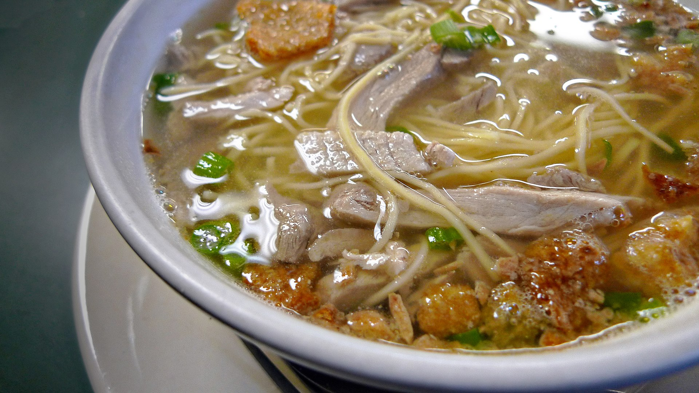

Lapaz Batchoy

Description
La Paz Batchoy also referred to as batchoy or batsoy, is a famous noodle soup from La Paz, Iloilo City, made with pork offal, crushed chicharon, meat stock, and fresh egg noodles.
Ingredients
- 3 pounds pork bones
- 2 pounds beef bones, with marrow
- water
- ½ pound pork shoulder
- ½ pound pork intestines, cleaned
- ½ pound pork liver
- 1 red onion, peeled and minced
- 2 cloves garlic, peeled and minced
- 1 tablespoon sauteed shrimp paste
- 2 tablespoons sugar
- ¼ teaspoon MSG
- rock salt and pepper
- 2 package (16 ounces each) fresh miki noodles
For the Toppings
- pork cracklings (chicharon), crushed
- fried garlic bits
- green onions
Steps
- In a deep pot, bring enough water to cover bones to a boil. Add bones and boil, skimming scum that floats on top, for about 10 minutes. Drain bones and discard liquid.
- Under cold running water, rinse bones to rid of any scum. Rinse pot. Return the bones to the pot and enough cold water (about 10 to 12 cups) to cover. Bring to a boil, skimming scum that floats on top. Lower heat, cover, and simmer for about 2 hours.
- Using a colander, strain broth. Scrape off any attached meat from the bones and set aside. Using a small spoon, scoop out marrow from beef bones and set aside. Discard the bones.
- Return broth to the pot and bring to a boil. Add pork shoulder and pork intestines. Cook for about 30 to 40 minutes or until tender. With a slotted spoon, remove from pot and allow to slightly cool to touch. Slice into strips and set aside.
- Add liver to pot and cook for about 7 to 10 minutes. With a slotted spoon, remove from pot and allow to slight cool to touch. Slice into strips and set aside.
- Add onions and garlic to the pot of hot broth. Cook for about 2 to 3 minutes or until onions and garlic are softened.
- Add shrimp paste and stir until dispersed. Add sugar and MSG. Season with rock salt and pepper to taste.
- In a saucepot, bring about 3 quarts of water to a boil. Using a strainer basket, submerge noodles for about 30 to 40 seconds. Drain well and divide into serving bowls.
- Ladle hot broth over the noodles. Top with sliced pork, intestines, liver, and any scrap meat from bones. Divide bone marrow into each bowl, if desired.
- Garnish with chicharon, fried garlic bits, and green onions.
- Serve hot
- Share and enjoy!